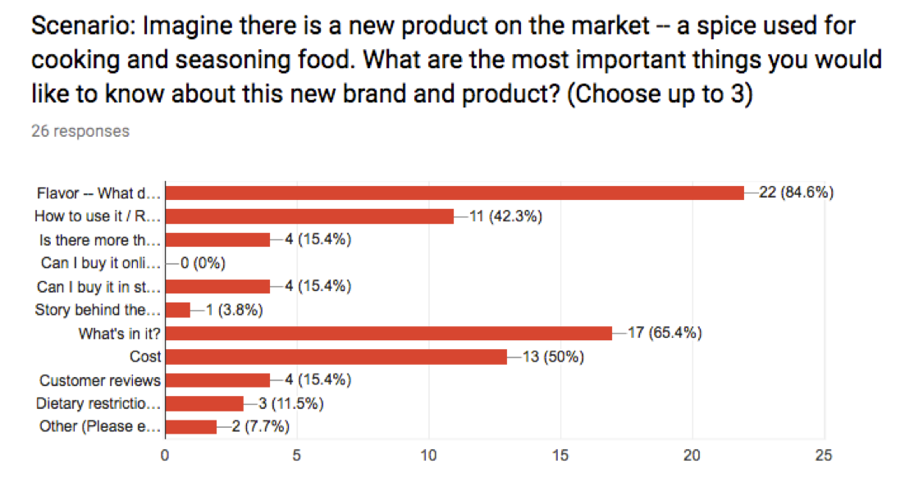

For Libra, I came up with my own product and packaging design to showcase. Although Libra is only a one page site, it's packed with enough information to introduce a new product concept and company to the world.
Designing Libra was all about the surveys. I wanted to know what's important to users when being introduced to a new product as well as feedback when it came to the design itself.
I wanted to know what things were most important to a user when learning about a new product. I conducted a survey and found that flavor and ingredients are two of the top items that users care about. Since Libra is a single page site, I decided to highlight and describe the flavors of the product in great detail. I also wanted to give the users a sense of where the product comes from and the benefits of Libra’s natural ingredients.
I was also curious to know how users portrayed different logo ideas. I conducted anohter survey asking respondents to look at a selection of six logos and then answer a few questions. For each question, the respondent was asked to imagine a company or brand then to match which logo would be most fitting for that brand. There were over 600 responses to this survey. In the end, I decided to go with the logo that most users found to be high-end and luxury.